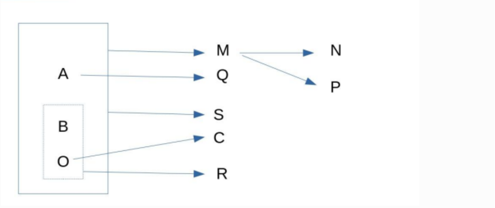
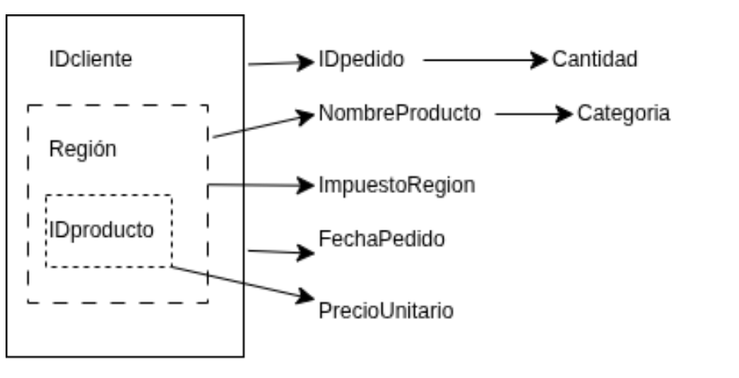
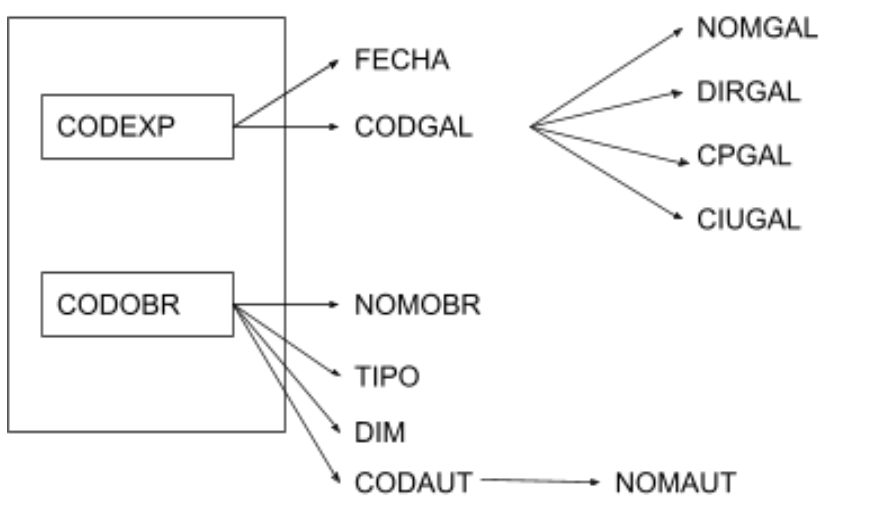

Ejercicios
Revisa tu solución
Antes de consultar las soluciones, utiliza el prompt de Cómo utilizar la IA para aprender.
📤 Qué entregar a la IA
- El enunciado y la tabla o grafo de partida.
- Tu grafo de dependencias normalizado, como imagen de Draw.io o fotografía clara.
- Las tablas del modelo relacional, con sus atributos, PK y FK. Por ejemplo:
EMPLEADO(dni, nombre)
PK: dni
TRABAJA(dni, num_proyecto, horas)
PK: (dni, num_proyecto)
FK: dni → EMPLEADO(dni)
Explica cómo has marcado las claves en el grafo. Pide a la IA que revise las dependencias, la normalización y las PK y FK, dándote pistas sin resolver el ejercicio. Después de corregirlo, envía la versión actualizada.
Ejercicio 1. Grafo de dependencias funcionales
Las relaciones representadas por los grafos ya se encuentran en 1FN. Normaliza hasta 3FN.

Ejercicio 2. Pedidos
Las relaciones representadas por los grafos ya se encuentran en 1FN. Normaliza hasta 3FN y presenta las tablas resultantes en el modelo relacional, indicando sus claves primarias (PK) y foráneas (FK).
El grafo representa las dependencias entre los datos de una única tabla PEDIDOS. Antes de normalizarla, todos los campos pertenecen a la tabla que se muestra a continuación.
| IDcliente | Región | IDproducto | IDpedido | Cantidad | NombreProducto | Categoria | ImpuestoRegion | FechaPedido | PrecioUnitario |
|---|---|---|---|---|---|---|---|---|---|

Ejercicio 3. Órdenes de pedido
Las relaciones representadas por los grafos ya se encuentran en 1FN. Normaliza hasta 3FN y presenta las tablas resultantes en el modelo relacional, indicando sus claves primarias (PK) y foráneas (FK).
| id_orden | fecha | id_cliente | nom_cliente | estado | num_art | nom_art | cantidad | precio |
|---|---|---|---|---|---|---|---|---|
| 2301 | 23/02/11 | 101 | Martin | Caracas | 3786 | Red | 3 | 35,00 |
| 2301 | 23/02/11 | 101 | Martin | Caracas | 4011 | Raqueta | 6 | 65,00 |
| 2301 | 23/02/11 | 101 | Martin | Caracas | 9132 | Paq-3 | 8 | 4,75 |
| 2302 | 25/02/11 | 107 | Herman | Coro | 5794 | Paq-6 | 4 | 5,00 |
| 2303 | 27/02/11 | 110 | Pedro | Maracay | 4011 | Raqueta | 2 | 65,00 |
| 2303 | 27/02/11 | 110 | Pedro | Maracay | 3141 | Funda | 2 | 10,00 |
Ejercicio 4
La tabla ORDENES contiene información sobre las exposiciones, las galerías, las obras expuestas y sus autores.
| codexp | codgal | nomgal | dirgal | cpgal | ciugal | fecha | codobr | nomobr | tip | dim | codaut | nomaut |
|---|---|---|---|---|---|---|---|---|---|---|---|---|
| ART024 | ART | ARTACTUAL | C/ Enmig, 54 | 12001 | Castelló | Del 1-12-2012 al 15-12-2012 | GO-068 | Bodegón | Óleo | 60x40 | GM | Gregori Mifsud |
| ART024 | ART | ARTACTUAL | C/ Enmig, 54 | 12001 | Castelló | Del 1-12-2012 al 15-12-2012 | GO-069 | Bodegón | Óleo | 50x30 | GM | Gregori Mifsud |
| ART024 | ART | ARTACTUAL | C/ Enmig, 54 | 12001 | Castelló | Del 1-12-2012 al 15-12-2012 | GO-070 | Paisaje lunar | Óleo | 100x50 | GM | Gregori Mifsud |
| ART024 | ART | ARTACTUAL | C/ Enmig, 54 | 12001 | Castelló | Del 1-12-2012 al 15-12-2012 | RA-250 | Estampa antigua | Aquarela | 40x30 | RB | Ramon Bernat |
Se conocen las siguientes dependencias funcionales:
- codexp → fecha, codgal.
- codgal → nomgal, dirgal, cpgal, ciugal.
- codobr → nomobr, tip, dim, codaut.
- codaut → nomaut.
- La pareja codexp + codobr identifica la participación de una obra en una exposición, aunque no tiene otros atributos propios.

Descompón la tabla hasta 3FN y presenta el modelo relacional con sus PK y FK. Utiliza las dependencias indicadas en el enunciado.
Ejercicio 5
Se dispone de la siguiente tabla no normalizada, que almacena información sobre los trabajadores de una empresa:
| nss | nombre | apellidos | puesto | salario | emails |
|---|---|---|---|---|---|
| 111 | Juan | Pérez Arias | Jefe de Área | 3000 | juanp@ecn.es; jefe2@ecn.es |
| 222 | José | Sánchez Ramos | Administrativo | 1500 | juanp@ecn.es; jefe2@ecn.es |
| 333 | Ana | Díaz Ruiz | Administrativo | 1500 | adiaz@ecn.es; ana32@gmail.com |
Tareas:
- Analiza la tabla y determina su clave primaria.
- Identifica las dependencias funcionales y elabora su grafo. Explicita las reglas que asumas: los valores de una muestra no bastan para establecer una dependencia.
- Normaliza paso a paso hasta 3FN.
- Presenta las tablas resultantes con sus PK y FK.
Ejercicio 6
La tabla PELICULA contiene información sobre las películas, sus estudios y los actores que participan en ellas:
| titulo | anyo | duracion | tipo | estudio | ciudadestudio | actor |
|---|---|---|---|---|---|---|
| Star Wars | 1977 | 124 | Color | Fox | Hollywood | Carrie Fisher |
| Star Wars | 1977 | 124 | Color | Fox | Hollywood | Mark Hamill |
| Star Wars | 1977 | 124 | Color | Fox | Hollywood | Harrison Ford |
| Mighty Ducks | 1991 | 104 | Color | Disney | Buena Vista | Emilio Estevez |
| Ben Hur | 1959 | 212 | Color | MGM | Hollywood | Charlton Heston |
| Ben Hur | 1959 | 212 | Color | MGM | Hollywood | Martha Scott |
| El retorno del Jedi | 1983 | 124 | Color | Fox | Hollywood | Carrie Fisher |
Se conocen las siguientes reglas del dominio:
- De un mismo título pueden existir versiones de distintos años, pero nunca con los mismos actores.
- Un actor puede participar en varias películas durante un mismo año.
- Un estudio no puede estar ubicado en más de una ciudad.
- Un actor puede trabajar con distintos estudios a lo largo de su carrera.
Tareas:
- Determina la clave primaria de la tabla original y justifica tu elección.
- Identifica las dependencias funcionales y las posibles claves candidatas.
- Aplica la normalización hasta 3FN.
- Presenta el esquema final con sus PK y FK.
Ejercicio 7
Una universidad utiliza una única tabla para registrar los alumnos y los cursos en los que se matriculan. El diseño actual genera redundancias y posibles errores de actualización.
MATRICULA
| idmatricula | nombre | apellido | direccion | telefono | curso | codigo | carrera |
|---|---|---|---|---|---|---|---|
| 100 | Juan | Martín Arias | C/ Ongolmo 340, Concepción | 78872890 | base datos | bd1 | ingeniería civil informática |
| 100 | Juan | Martín Arias | C/ Ongolmo 340, Concepción | 78872890 | estadística | e2 | ingeniería civil informática |
| 100 | Juan | Martín Arias | C/ Ongolmo 340, Concepción | 78872890 | analítica | a5 | ingeniería civil informática |
| 200 | Ana | Rodríguez Ferrer | C/San Martín 840, Santiago | 78342367 | estadística | e2 | ingeniería comercial |
| 200 | Ana | Rodríguez Ferrer | C/San Martín 840, Santiago | 78342367 | analítica | a5 | ingeniería comercial |
Tareas:
- Analiza los problemas de diseño e identifica las dependencias funcionales.
- Determina la clave primaria y justifica tu elección.
- Normaliza paso a paso hasta 3FN. Separa la dirección y la localidad para poder tratarlas como datos independientes.
- Presenta las tablas resultantes con sus atributos, PK y FK.
Para interpretar el ejercicio, idmatricula identifica al alumno, tal como muestran las filas del enunciado; codigo identifica al curso. Explicita cualquier otra regla que necesites asumir.